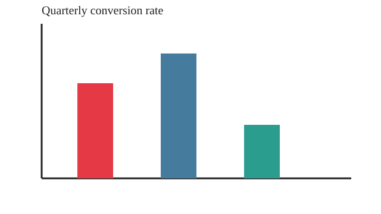

Image with no alt attribute
Missing an alt attribute entirely.
Examples for images, icon links, SVG, canvas, frames, and time-based media.
Missing an alt attribute entirely.

The chart conveys information but is hidden from screen readers.
The link’s only content has empty alt text.
Canvas content needs a text alternative when it conveys meaning.
This is primarily a manual WCAG check because tools cannot judge whether captions/transcripts match the media.
Included as a manual review example.